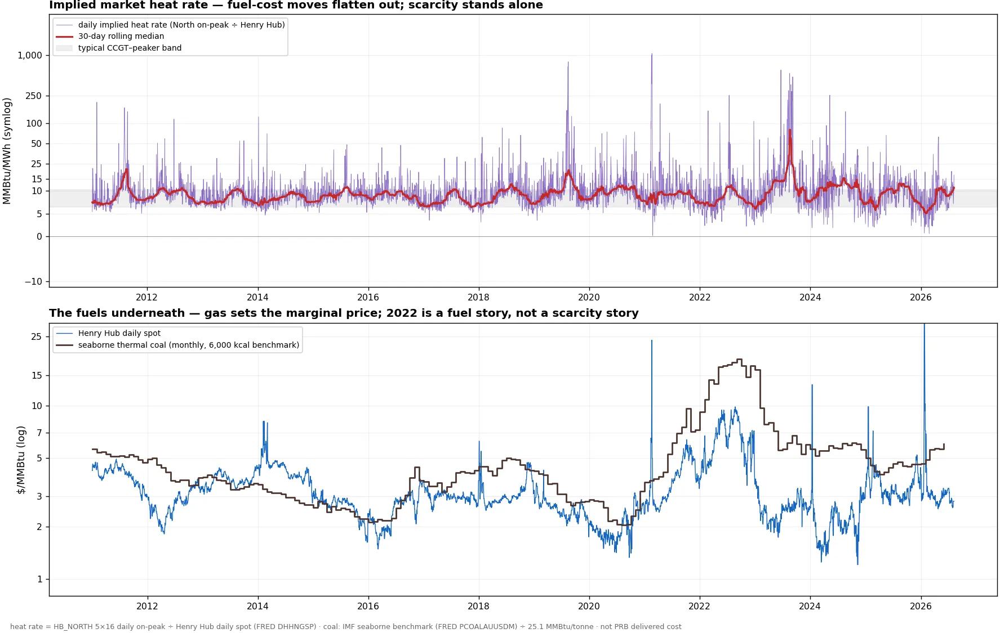
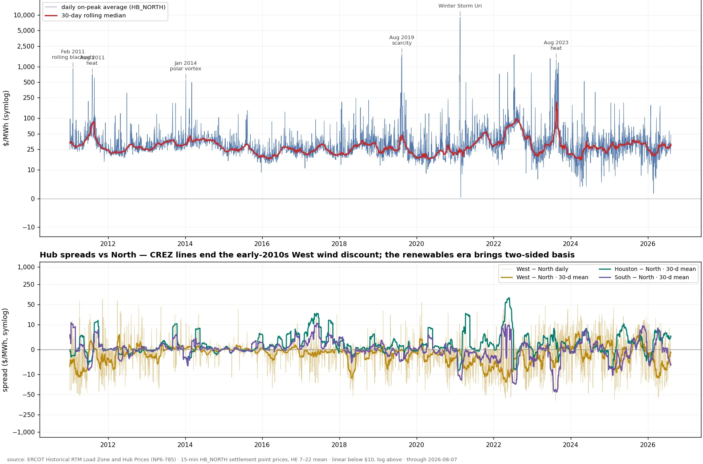

ERCOT North Hub — fifteen years of real-time on-peak prices
Daily on-peak averages of HB_NORTH real-time settlement point prices — the hub the liquid ICE 5×16 contract settles against — from the start of the nodal-era archive in 2011 through the present. The daily value is the mean of hours-ending 7–22; the chart shows the 5×16 block (weekdays, NERC holidays excluded). The log scale is the point: the median on-peak day over fifteen years is under $30/MWh, and the tail runs to daily averages pinned at the $9,000 cap for three consecutive days during Uri — a four-hundred-fold range no linear axis can show honestly. And the modern wrinkle at the other end: solar has made negative hourly prices routine and has begun dragging whole daily on-peak averages below zero on mild, sunny weekend days (five so far, all outside the 5×16 block shown — the weekday floor on record is +$0.39, the post-Uri crash). No 5×16 day has printed negative yet; as the solar build-out continues, the first one is plausibly coming — hence the arcsinh/symlog axis, linear through zero and logarithmic in the tails, ready for it.


Method
ERCOT publishes one workbook per year of 15-minute settlement point prices for every hub and load zone. Each year is filtered to HB_NORTH and HB_HUBAVG, the intervals averaged within each delivery hour and the on-peak window (hours ending 7–22) averaged into a daily value. The 5×16 flag marks weekdays excluding the six NERC holidays with Sunday→Monday observance. Fifteen-minute settlement began with the nodal market; the series starts 2011-01-01.
Prices are settlement values as published, not adjusted for the system-wide offer cap regime, which changed over the period ($3,000 pre-2015, stepping to $9,000 by 2015, reduced to $5,000 after Uri) — read multi-year tail comparisons with the cap history in mind. Current-year data refreshes with ERCOT's monthly archive update.